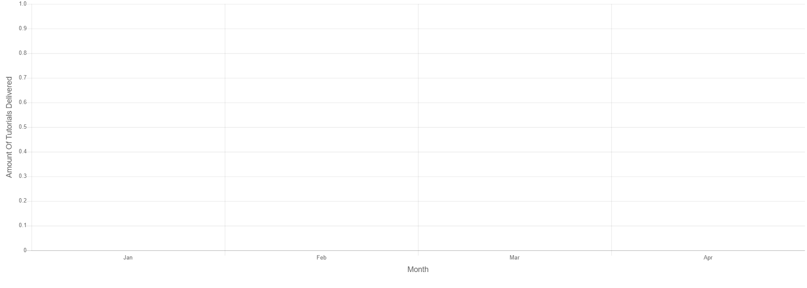

<!--
  Generated template for the AdminStatisticsDeliveredPage page.

  See http://ionicframework.com/docs/components/#navigation for more info on
  Ionic pages and navigation.
-->
<ion-header>

  <ion-navbar>
    <ion-title>admin-statistics-delivered</ion-title>
  </ion-navbar>

</ion-header>


<ion-content padding>
  <div class="topic">
    <p>
      Tutorials Delivered
    </p>
  </div>
  <!-- <button on-click="debug()">Click me </button> -->
  <form (submit)="generateChart()">
    <ion-grid>
      <ion-row text-center>
        <ion-col size="18" size-sm>
          <div class="headers">
            <h4>Course</h4>
            <div>
              <select class="form-control" name="course" id="course" class="input" [(ngModel)]="selectedCourse" [ngModelOptions]="{standalone: true}">
                <option>Please select a course</option>
                <option selected value="all">All</option>
                <option *ngFor="let course of courses; trackBy: id;let i = index;" class="form-control" class="text-center">{{course?.title}}
                  {{course?.code}}</option>
              </select>
            </div>
          </div>
        </ion-col>
        <ion-col size="12" size-sm>
          <div>
            <h4>Course year</h4>
            <select class="form-control" name="year" id="year" class="input" [(ngModel)]="selectedYear"
              [ngModelOptions]="{standalone: true}">
              <option selected value="all">All</option>
              <option>1</option>
              <option>2</option>
              <option>3</option>
              <option>4</option>
            </select>
          </div>
        </ion-col>
        <ion-col size="12" size-sm>
          <div>
            <h4>Start date</h4>
            <div>
              <div class="input-group-prepend">
                <!-- <span class="input-group-text">from</span> -->
              </div>
              <input type="date" class="form-control" name="start" id="start" [(ngModel)]="fromDate" [ngModelOptions]="{standalone: true}"
                required />
            </div>
          </div>
        </ion-col>
        <ion-col size="12" size-sm>
          <div>
            <div>
              <h4>End date</h4>
              <div class="input-group-append">
                <!-- <span class="input-group-text">To</span> -->
              </div>
              <input type="date" class="form-control" name="end" [(ngModel)]="toDate" [ngModelOptions]="{standalone: true}"
                required />
            </div>
          </div>
        </ion-col>
        <ion-col size="12" size-sm>
          <div>
            <h4>Action</h4>
            <button *ngIf="fromDate != undefined && toDate != undefined && selectedCourse != undefined && selectedYear != undefined && chartGenerated == false"
              type="submit" class="btn btn-info btn-sm">
              <!-- <fa-icon [icon]="'eye'"></fa-icon> -->
              <span class="d-none d-md-inline">View</span>
            </button>
            <button *ngIf="chartGenerated == true" (click)="refreshPage()"> <span class="btn btn-info btn-sm">New Chart</span></button>
            <button *ngIf="lineChartDataFinal.length > 0" (click)="exportAsXLSX()"> <span class="btn btn-info btn-sm">Download
                as XLS</span></button>
            <button *ngIf="chartGenerated == true  && chartLine==true" (click)="toggleChartLine()"> <span class="btn btn-info btn-sm">Line Chart</span></button>
            <button *ngIf="chartGenerated == true  && chartLine==false" (click)="toggleChartBar()"> <span class="btn btn-info btn-sm">Bar Chart</span></button>
          </div>
        </ion-col>
      </ion-row>
    </ion-grid>
  </form>

  <div class="row">
      <ng-container *ngIf="lineChartDataFinal.length == 0">
          
        </ng-container>
    <ng-container *ngIf="lineChartDataFinal.length > 0 && chartLine==true">
      <div class="col-md-12">
        <div>
          <div style="display: block">
            <canvas baseChart width="1400" height="500" [datasets]="lineChartData" [labels]="lineChartLabels2" [options]="lineChartOptions"
              [legend]="barChartLegend" [chartType]="barChartType">
            </canvas>
          </div>
        </div>
      </div>
    </ng-container>
    <ng-container *ngIf="lineChartDataFinal.length > 0 && chartLine==false">
      <div class="col-md-12">
        <div>
          <div style="display: block;">
            <canvas baseChart width="1400" height="500" [datasets]="lineChartData" [labels]="lineChartLabels2"
              [options]="lineChartOptions" [colors]="lineChartColors" [legend]="lineChartLegend" [chartType]="lineChartType"
              (chartHover)="chartHovered($event)"></canvas>
          </div>
        </div>
      </div>
    </ng-container>
  </div>
</ion-content>
